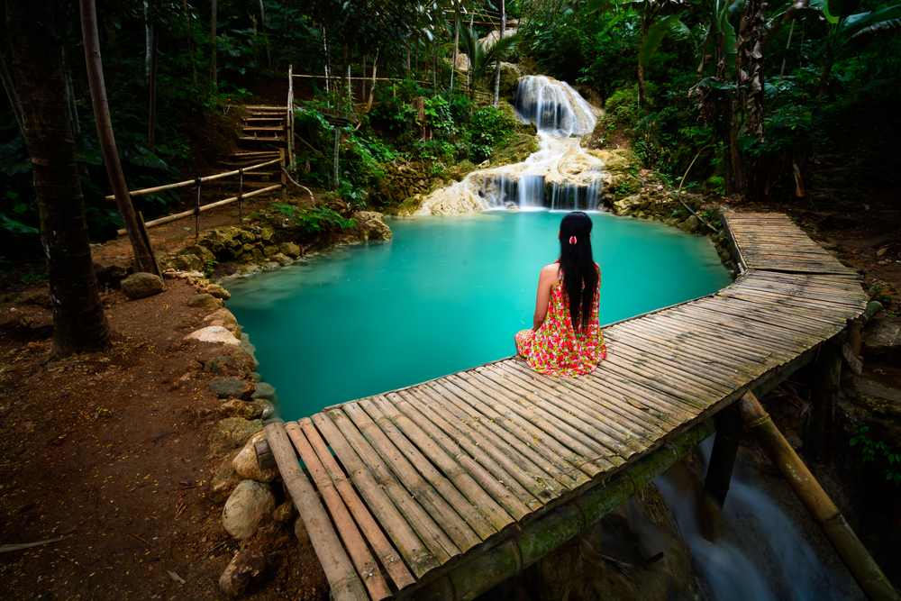

Detail Yogyakarta
Mengenal Yogyakarta
Yogyakarta adalah daerah istimewa setingkat provinsi di Pulau Jawa, Indonesia. Uniknya, nama ibu kota provinsinya juga Yogyakarta. Uniknya lagi, nama tersebut sering dilafalkan berbeda-beda. Ada yang menyebutnya Yogyakarta, Yogya, Jogjakarta, atau Jogja. Anak muda menyebutnya YogYes (yes=ya, maka yogyes=yogya).
Bagi banyak orang Indonesia, Jogja adalah semacam kampung halaman kedua. Mungkin karena ratusan ribu orang pernah tinggal di sini bertahun-tahun ketika kuliah. Mungkin juga karena semua orang diterima seperti di rumah sendiri ketika di Yogyakarta. Joko Pinurbo, penyair terkemuka Indonesia, mengatakannya dengan indah, "Yogya terbuat dari rindu, pulang, dan angkringan."
Kuliner Jogja

Makanan khas Jogja adalah Gudeg. Bila New York sering disebut sebagai "Big Apple" dan Jakarta sebagai "Big Durian", maka Yogyakarta mungkin bisa disebut "Big Jackfruit" saking identiknya dengan makanan yang terbuat dari nangka muda itu. Selain gudeg, Jogjakarta memiliki banyak kekayaan kuliner yang tak kalah eksotis, mulai dari jadah tempe hingga walang goreng. Datanglah ke Yogyakarta, Anda bisa mencicipi manis, pedas, asam, dan asinnya kekayaan kuliner Jogja serta kisah di baliknya.
Wisata Yogyakarta
Ada beberapa tempat wisata yang menarik di Yogyakarta dan sekitarnya . Di kota Yogyakarta sendiri , Anda dapat mengunjungi Malioboro dengan aneka ragam barang dagangan yang ditawarkan kepada pengunjung seperti makanan dan souvenir. Selain itu terdapat Keraton dan Puri Taman Sari. Di sekitar Yogyakarta, Anda akan menemukan tempat wisata Candi Prambanan, candi Mendut dan Candi Boko dengan ciri khas Hindu yang melekat pada bentuk bangunan dan ornamen candi. Tak kalah menarik adalah Anda juga dapat melihat keindahan dan kemegahan candi dengan ciri khas Budha yaitu Candi Borobudur yang terkenal di dunia, yang menjadi salah satu dari tujuh keajaiban di dunia. Apalagi pada saat-saat tertentu, secara berkala sering diadakan acara keagamaan dan seni budaya. Di Candi Prambanan, Anda dapat menyaksikan sendratari Ramayana yang diselenggarakan beberapa kali dalam seminggu. Di Candi Borobudur Anda juga dapat menyaksikan acara seni budaya atau sendratari dan perayaan hari besar umat Budha yaitu Waisak.